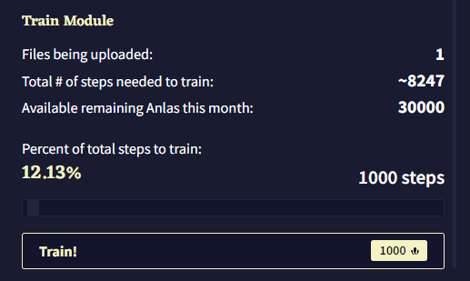

Module Training
Modules At a Glance
Tip에서 봤겠지만, 모듈은 "AI를 스타일, 장르 혹은 설정에 집중시킬" 수 있고, "특정 주제를 다루거나 유명한 작가, 글쓰기 스타일을 흉내내거나, 참고 자료를 제공할 수 있습니다." 그런데 Module Trainer는 어떻게 사용하고, 어떻게 이것을 최대한 활용할 수 있을까요?
Splash Screen에서 왼쪽의 Library Sidebar를 열고 Goose/Identicon을 클릭하여 User Menu를 여십시오. 그리고 Other 섹션에서 AI Module Training을 찾을 수 있을 겁니다. 이를 클릭하면 Module Trainer으로 들어갈 수 있고, 선택한 텍스트로 모듈을 학습시키고 학습이 끝난 모듈을 사용하여 AI의 출력물을 해당 텍스트와 비슷해지게 할 수 있습니다.
The Module Trainer
자, Module Trainer를 열었을 때 약간 부담감이 생겼더라고 괜찮습니다. 모듈을 요리하는 데에는 여러 옵션과 방법이 있습니다! 하지만 가장 먼저 자료를 업로드Upload Your Material해야 합니다.
Upload Your Material
“자료Your Material”는 .txt 파일에 들어갈 수 있는 것이라면 뭐든지 좋습니다. 이것은 모듈의 훈련 데이터, 즉 이 모든 과정의 중심과 비밀 재료과 됩니다. 하나의 모듈을 훈련시키는 중에 Module Trainer가 다룰 수 있도록 여러 .txt 파일을 추가할 수 있고, Editor에 열려 있는 현재 스토리도 추가할 수 있습니다.
일단 .txt 파일을 업로드하거나 현재 스토리를 추가하면, File list에 파일 이름과 파일의 크기(보통 KB ~ MB), 파일의 대략적인 스텝의 수가 나타납니다. 이것은 주어진 파일의 모든 내용을 커버하기 위해 필요한 모듈 훈련의 스텝의 예상 숫자입니다. Train Module과 Training Mechanics에서 이것의 의미를 더 자세히 알아볼 것입니다.
Model
해당 드롭다운 메뉴는 모듈이 훈련될 AI 모델을 선택합니다. 모듈은 훈련된 AI 모델에 대해서만 사용할 수 있으므로 다른 모델에 모듈을 사용하기 위해서는 별도로 훈련을 실행해야 합니다.
Goose tip: 향후에 나올 모델로 모듈을 만들려고 한다면, 훈련시킬 데이터를 저장해두는 것도 유용해요!
Module Name
해당 텍스트 필드는 훈련된 모듈의 이름을 결정하고, AI 모듈 선택 드롭다운과 AI Modules Gallery에 나타날 이름이기도 합니다. 이 모듈 이름은 사용자가 원하는대로 설정할 수 있으며, 모듈 드롭다운에서 모듈을 선택할 때 모듈을 식별하는 주요한 방법으로 사용됩니다.
Module Description
해당 텍스트 필드는 AI Modules Gallery에서 모듈에 첨부되어 나타날 짧은 설명을 결정합니다. 이 모듈이 어떤 데이터를 다루는지, 어떤 것을 달성하려고 하는지에 관한 빠른 설명을 넣기에 좋은 장소입니다. The Provided Modules에는 정보보다는 장황하고 화려한 설명이 많긴 하지만 설명을 작성하기가 막막하다면 이 곳에서 힌트를 얻는 것도 나쁘지 않습니다!
Train Module
이 제목 아래에는 모듈 훈련을 위해 업로드된 파일의 수, 업로드된 파일의 내용을 모두 커버하기 위해 필요한 Module Training Steps의 총 수, 이번 달에 남아있는 Anlas의 양을 포함한 짧은 통계 요약이 있습니다. 모듈 훈련 중에는 모든 스탭에 1 Anlas가 소모되며, 이는 “Percent of total steps to train”에 반영됩니다. 이 슬라이더를 조절하여 모듈의 내용을 훈련시키기 위한 실제 스텝 수를 선택할 수 있으며 값은 최소 50에서 최대는 계정에 있는 Anlas의 수 입니다. 스텝의 수는 슬라이더 오른쪽에 표시되며 이를 클릭하여 수동으로 스텝의 수를 입력할 수 있습니다. 왼쪽에는 백분율이 표시되며, 이는 선택한 스텝의 수를 “훈련에 필요한 총 스텝 수Total # of steps needed to train” 통계로 나눈 값입니다.
Train
파일과 이름, 설명, 스텝의 수를 정했으면 모듈을 훈련시킬 준비가 끝났습니다! Train! 버튼을 누르면 모듈 훈련 과정이 공식적으로 시작되며, 오른쪽에 모듈의 최종 Anlas가 표시됩니다. 버튼을 클릭하면 모듈은 Module Queue에 들어가게 됩니다. 이것은 NovelAI 서버가 사용자의 모듈을 훈련시킬 수 있을 때까지 모든 모듈이 대기되는 전역 대기 목록입니다. 모듈을 훈련시키는 시점에 모듈 훈련의 수요가 얼마나 있는지에 따라 시간이 좀 걸릴 수도 있고 아주 빨리 끝날 수도 있습니다. 가장 중요한 것은 일단 모듈이 대기열에 들어가면 모듈 훈련창이나 NovelAI를 완전히 닫아도 모듈의 대기번호는 바뀌지 않습니다. (대기열이 오래 걸릴 경우 유용힙니다!)
모듈이 대기열 맨 앞으로 이동하면 훈련이 시작되고 모듈이 형성되는 동안 Loss Graph이 실시간으로 업데이트되는 것을 볼 수 있습니다. 이 그래프는 X축에는 스텝 수를, Y축에는 Loss가 표시됩니다. 특히 선이 뒤죽박죽 움질일 때, 처음 이용하는 사람들은 이에 대해 면밀히 조사하려고 하지만 훈련 그래프를 너무 지나치게 해석하는 것은 피하는 것이 중요합니다. Loss는 이 페이지의 범위를 넘는 복잡한 지표이지만 모듈을 실제로 사용하기 전까지는 이것에 대해 몰라도 괜찮다고 할 수 있습니다.
훈련 과정이 완료되면 Loss Graph가 움직임을 멈추고 원래 모듈 훈련 인터페이스를 가리는 새로운 메뉴가 팝업됩니다. 이 메뉴에서 사용자는 .Module 파일로 완성된 모듈을 다운로드하거나 Module Trainer에서 훈련 데이터를 삭제하거나 최종 Loss Graph를 볼 수 있습니다. 완성된 모듈은 이 시점에 이미 사용자의 계정에 저장되므로 .Module 파일을 다운로드하는 것은 단순한 보관 목적이나 공유 목적입니다! 새 모듈 훈련을 시작하기 위해서는 훈련 데이터를 삭제해야 하며, 이 경우 만들었던 모듈을 다시 다운로드할 수 없게 됩니다. 자, 새롭게 만든 모듈을 사용하는 것에 대해 이야기해봅시다!
Using a Module
Selecting A Module
Editor에서 Library Sidebar를 열고 Story를 클릭하면, 'Story' 탭 옵션 사이드 바의 AI Module에서 모듈을 선택할 수 있습니다. 모듈을 선택하면 해당 모듈이 텍스트를 생성하기 위한 스토리의 활성 모듈이 됩니다. 이 경우는 드롭다운 선택을 통해 이뤄지지만 드롭다운 박스 바로 위의 All Modules를 클릭하면 AI Modules Gallery로 이동합니다.
The AI Modules Gallery
Imported, Specials, General, Style, Theme, Inspiration 섹션으로 구분된 카드 그리드로 나타나는 AI Modules Gallery에서 현재 AI 모델에서 사용가능한 모든 모듈을 Description과 Thumbnail Images와 함께 빠르게 찾을 수 있습니다. 갤러리의 Imported 섹션에서 사용자가 직접 훈련했거나 .Module 파일을 공유하는 사용자로부터 공유받은 모든 커스텀 모듈이 있는 곳입니다. 나머지 섹션은 The Provided Modules를 확인하세요!
The Provided Modules
Specials 섹션은 '추가 기능이 있는' 모듈을 위해 예약된 자리입니다. 여기에서 Text Adventure Module를 찾을 수 있습니다. General 섹션에서는 스토리에 No Module 옵션을 선택하거나, 다양한 스토리 주제에 적합한 Cross-Genre 장르 옵션을 선택할 수 있습니다. Style 섹션은 특정 유명 작가의 자료를 포함하는 모듈이 있습니다. Theme 섹션은 가장 크며, 명확히 정의된 문학 장르의 다양한 자료를 묶은 모듈의 큰 선택지를 제공합니다. Inspiration 섹션은 Theme 섹션과 유사하지만, 그 대신 더 좁은 범위의 작품을 샘플링하여 보다 구체적이고 집중된 출력을 내는 모듈이 있습니다.
Text Adventure
이 모듈은 Editor의 외형을 Text Adventure 인터페이스로 바꾸기 때문에 Specials로 분류되었습니다! 간단히 말해, 이 모듈의 훈련 데이터는 완전히 이인칭 (모든 문장에서 "You"를 사용함)으로 작성되었으며, > 문자로 표시된 고유한 '플레이어 액션'을 가지고 있습니다. 텍스트 어드벤쳐 모드의 더 자세한 내용은 [documentation article](Matty’s Page Here)를 확인하십시오.
Advanced: Module Engineering
주의: 이 섹션은 훨씬 더 기술적인 언어를 사용하고 모듈을 최대한 활용하려는 고급 NovelAI 사용자를 대상으로 하고 있습니다. 이 섹션 내용의 이해를 위해 일부 기술 전문 용어와 기본적인 머신러닝 개념에 익숙하다고 가정합니다.
Secret Tweaks
Images for Custom Modules
AI Modules Gallery를 둘러보다 보면, 제공된 모듈들은 스타일리쉬한 썸네일 이미지를 갖고 있지만 사용자의 모듈은 모두 같은 보물 더미 이미지를 한 것을 확인할 수 있습니다. 다행히 이 이미지를 바꿀 방법이 있습니다! UI에서 공식적으로 지원되지는 않고, 텍스트 에디터의 사용이 필요합니다. 단순한 메모장도 좋지만 Notepad++이나 VSCode를 사용하면 더 빠르게 문자열을 찾고 읽을 수 있습니다. 다운로드된 .Module 파일을 텍스트 에디터로 열고 최하단으로 스크롤하세요. 그럼 다음처럼 보이는 몇 줄의 텍스트가 있을 겁니다:
],
"mode": 0
}
'mode' 뒤에 한줄을 추가하면 다음처럼 됩니다:
],
"mode": 0,
"image": "<image>"
그런 다음 원하는 모듈 썸네일 이미지를 원하는 호스팅 사이트(예를 들면, imgur)에 업로드하고 해당 이미지의 링크를 위 예시의 <image> 플레이스홀더에 붙여넣습니다. 그럼, 다음처럼 보일 것입니다:
],
"mode": 0,
"image": "https://i.imgur.com/yourmoduleimagehere.png"
Text Adventure Mode for Custom Modules
AI 출력을 대화형 Text Adventure처럼 동작하도록 변경하는 터스텀 모듈을 만들었다면, 해당 모듈을 선택했을 때 모듈이 Editor UI를 Text Adventure UI로 변경하도록 만들 수도 있습니다! 방금 위에서 이야기한 "mode" 라인을 0에서 1로 변경하면 됩니다.
수정을 한 후에 모듈 파일을 저장하고 NovelAI로 해당 모듈 파일을 다시 임포트하는 것을 잊지마세요!
Training Data In Depth
처음 모둘을 만들 때, 여러 이야기나 좋아하는 작품의 텍스트 덤프를 모으고 이를 모두 모듈에 넣는 것이 일반적인 관행입니다. 그러나 모듈의 성능을 최대한 활용하기 위해서는 모듈의 훈련 데이터를 모을 때 고려해야 할 여러 사항이 있습니다.
무엇보다도 중요한 것은 모듈에 넣는 모든 훈련 데이터는 중심적인 초점을 가져야 한다는 것입니다. 즉, 모듈이 무엇을 하게 하고 싶은지, 그리고 추가하는 훈련 데이터가 그것을 어떻게 도울 것인지를 알아야 합니다. 그 이후에는 모듈 데이터의 형식화와 정리에 대한 기술적인 세부사항으로 들어갑니다.
모둘 훈련 절차는 사용자가 제출한 훈련 자료에 존재하는 다양한 에러들에 의해 손상될 수 있으므로, 가능한 가장 깨끗한 데이터를 제공하는 것이 중요합니다. 아래 나열된 데이터 손상 요인을 제거하는데 도움이 되는 많은 도구가 있지만, 이런 잠재적 문제를 어떻게 해결할지는 사용자에게 달려있습니다.
제일 먼저, 과도하고 잘못 배치된 공백 문자가 있습니다. 문단 사이를 포함하여 어느 곳에서나 빈 줄은 좋지 못하고, 개행 앞/뒤에 오는 공백과 패딩 문자가 있는 것도 역시 좋지 못합니다. 둘째, 모든 형태의 헤더, 풋터, 챕터 지시자, 기타 다른 섹션 제목도 제거해야 합니다. module trainer에게 순수한 주제만 제공해야하며, 그렇지 않다면 결과물이 이런 종류의 시작과 끝 자료가 포함될 위험성이 있습니다. 셋쨰, 장면 간 전환은 별도의 줄에 dinkus (***)를 추가하여 명확하게 표시되야 하고, 챕터의 전환은 별도의 줄에 asterism (⁂)를 추가하여 표시해야 합니다. 이것은 훈련 데이터에 있어야 하는 유일한 '구분자'의 형태입니다.
네번쨰, 텍스트에 일반적이지 않은 타이포그래피 문자가 있어서는 안됩니다. 이것의 가장 흔한 예는 '바보 따옴표' ("와 ')1와 '똑똑한 따옴표' (“”와 ‘’)2를 같은 모듈에서 혼용하는 것이며, 이는 AI의 출력을 혼동스럽게 만드는 쉬운 방법입니다! 다섯번째와 마지막으로 이름, 단어, 혹은 구절이 과도하게 사용되지 않는지 확인해야 합니다. 이것들은 모듈을 이상한 방식으로 작동하게 만들 수 있습니다. 예를 들어, 텍스트 데이터에 Mr. Brown 캐릭터가 서류가방을 가지고 있다고 항상 언급되고 이것이 텍스트에서 너무 자주 발생한다면, 모듈은 서류가방이 언급될 때마다 Mr. Brown을 나타나게 할 것입니다!
역주: 키보드에서 입력할 수 있는 직선모양의 일반적인 따옴표를 말한다.
역주: 구부러진 모양의 따옴표이다.
Training Mechanics
더 기술적으로 접근하면, 모듈을 훈련시키는 것이 무엇을 의미하는지 더 잘 이해하기위해 Module Trainer가 어떻게 작동하는지 정확하게 살펴보는 것은 가치가 있습니다. 이전 섹션에서 설명한 것처럼, 모듈을 훈련시키기 위해 제공한 데이터에는 "스텝 수"가 지정되고 모든 훈련 데이터를 커버하귀 위해 필요한 스텝의 수를 '100% 스텝'이라고 합니다.
실제로 '스텝'은 실제적인 구체적 단위로서 256 토큰으로 구성됩니다. 훈련 데이터가 Module Trainer에 제공될 때, 훈련 데이터는 각각 256 토큰의 '청크chunk'로 나뉘고, 마지막 청크는 대부분의 데이터가 완전히 균등하게 가득찬 256 토큰으로 나누어지지 않기 때문에 패딩됩니다. 그래서 모듈을 100%의 스텝으로 훈련하는 것은 단순히 Module Trainer가 훈련 데이터가 나누어진 모든 256 토큰의 청크를 통과하게 하는 것을 의미합니다. 다음으로 가장 중요한 것은 Module Trainer가 실제로 이런 데이터의 청크로 훈련을 할 때, 이 청크들은 랜덤하게 섞이며 섞이는 순서는 각각 훈련 실행마다 고유하다는 것입니다.
만약 백 퍼센트의 단위(100%, 200%, ...)로 훈련을 할 경우에는 괜찮습니다. 이 경우에는 Module Trainer는 모든 청크를 한번, 두번 그리고 그 이상씩을 볼 것이고 섞임이 효과적으로 상쇄되기 때문입니다. 하지만 예를 들어 100%를 넘겨 훈련을 하기로 결정한다면, Module Trainer가 어떤 청크를 두번 보게 될 것인지, 한번반 보게 될 것인지 보장할 수 없습니다(알릴 방법도 없어요!). 같은 논리로 100% 미만의 훈련도 같은 위험을 갖고 있습니다. Module Trainer가 일부 청크를 볼 수 없기 때문입니다.